Chapter IV. Basal-Celled Carcinomata
Description
This section is from the book "Skin Cancer", by Henry H. Hazen, A.B., M.D.. Also available from Amazon: Skin Cancer.
Chapter IV. Basal-Celled Carcinomata
The differentiation of the basal-celled group of tumors from the other epithelial neoplasms is really due to the excellent work of Krompecher,* and in America the attention of both dermatologists and surgeons has been especially called to these growths by the publications of Bloodgood*.
This very large and important group of tumors embraces the typical Jacob's ulcers of the English author as well as of Unna, the cancroid of the early writers, and the rodent ulcers of the surgeons and dermatologists. Owing to the varying clinical and pathological pictures presented by these tumors, they have been much confused by most writers, many men not recognizing that the histological picture might vary, not only in different stages of the same growth, but also in sections taken from different parts at the same time. Some English authors have even gone so far as to speak of a rodent ulcer becoming malignant, when in reality the basal cells were simply invading the tissue in a slightly different way.
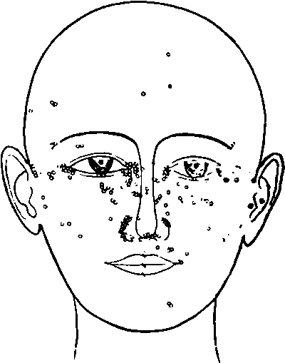Fig. 10.-Diagram of the sites of origin of 220 cases of basal-celled cancer. (After Sequeira).
*Krompecher: Der Basalzellenkrebs, Jena, 1903. 3 Bloodgood: Progressive Medicine, Dec, 1904.
Krompecher has shown that even the glandular tumors may have a different picture and run a different course, according to which layer of the glandular epithelium from which they arise, but this need not now concern us, though it does seem wise to point out the analogy.
Occurrence
These tumors are usually situated upon the face, especially upon the nose, eyelids, and median portions of the cheek, but may occur upon any other part of the face, or upon the back or shoulders. They are extremely rare upon the limbs. Sequeira's3 composite illustration shows very clearly where they usually arise (Fig. 10). They very rarely originate in people under thirty years of age, and are most common in the decade between forty and fifty.
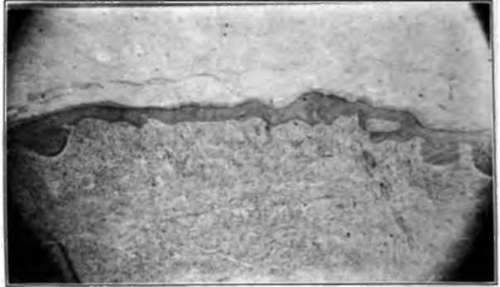Fig- 11.-This Illustration shows basal-celled carcinomata arising from different portions of the rete. Serial sections showed that there was no connection between the various growths. (Gilchrist's case).
It is usually stated that males are much more frequently affected than are women, some authors even stating that 90 percent of the cases occur in men and the majority believing that at least 75 percent of the patients are of the male sex. Neither Krompecher's nor the author's own statistics would seem to bear out this assumption, for Krompecher records nine in men and eight in women, and the author's figures give thirty-one in men and twenty-four in women.
Pathology
The neoplasms spring from the basal layer of the epithelium. Not infrequently they are multiple, especially in the type springing from seborrheic warts. Petersen* has demonstrated that the growths may have a multicentric origin. In a recent case from the Johns Hopkins Dcrmatological Clinic it could be clearly shown that in one nodule there were a number of separate and distinct places where malignant proliferation was beginning (Fig. 11). The whole growth was sectioned, and these small nodules had no connection with each other. From this section it was possible to demonstrate the very earliest changes, photographs of which are here reproduced. The first change noted is an unduly long downward growth of the intrapapillary process (Fig. 12). There is some degeneration of the rete, and many of the prickle cells have lost their nuclei. There is a slight invasion of the rete by round cells and fixed tissue cells; the subpapillary portion of the corium shows a slight increase in these same cells, and the blood vessels arc dilated. The second stage (Fig. 13) shows a clubbing of this downward growth; the basal cells have begun to proliferate, and the death of the cell nuclei is very apparent. The fibrous tissue of the corium shows some signs of compression, and there is an increase in small round and fixed tissue cells, some of which have invaded the rcte. In the third stage (Fig. 14) the cancerous lesion is distinctly semiglobular in shape, due entirely to a proliferation of the basal cells, there may or may not be infiltration of the corium by inflammatory cells, and the death of the nuclei of the prickle cells can be clearly seen. Some nuclei can be distinguished lying in vacuoles, either within or without the cells. In the fourth stage (Fig. 15) the basal-celled growth has invaded the rete, so that surface ulceration has taken place. At a later period the basal membrane is broken through, and the invasion of the corium begins.
*Hft/|u<!lra: Brit. Jour. Dermat., 1913, xxv, 172.
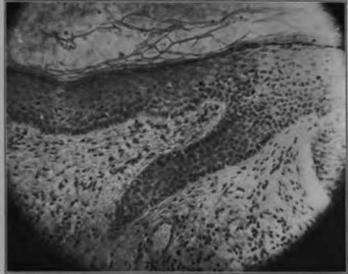Fig. 12.-The earliest lesion of cancer is a downgrowth of the epithelium. Some of the prickle cells have lost their nuclei. There is very little infiltration of the surrounding eorium. (Gilchrist's case).
*Petersen: Beltrage x. clln. Chlr.. 1902, xxxii, 543.
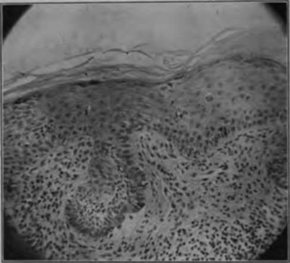Fig. 13.-The second change in a developing basal-celled cancer is a clubbing of the downgrowth shown in Fig. 12. The basal cells are beginning to proliferate, and degenerative changes may be plainly distinguished in the spinous cells. (Gilchrist's case).
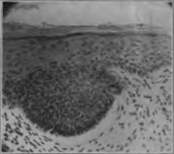Fig. 14.-The downgrowth contracts, so that a solid mass of basal cells is formed. (Gilchrist's case).
After the invasion begins, the pathological picture varies. At first there are solid masses of the deeply-staining basal cells (Fig. 16), the Carcinoma basocellulare solidum of Krompecher and Bloodgood. The solid masses do not, however, long remain so, for they either degenerate in the center, forming cysts, or else arrange themselves in solid finger-like downgrowths (Fig. 17). The cystic degenerations are often very extensive, and it is not unusual to find numerous large cavities, surrounded by two or three layers of cancer cells. This stage is called Carcinoma basocelhdare (solidum et cysticum). The growth may have a distinctly acinous arrangement, there being many fine branches, somewhat like the limbs of a tree. This condition forms the Carcinoma basocellulare adenoides of Krompecher, the glandular epitheliomata of the older writers, and the tubular epitheliomata of the modern dermatologists. In some of the large fungating neoplasms there may occur large or small stellate alveoli of cancer cells imbedded in granulation or fibrous tissue, so as to somewhat resemble seirrhus carcinoma of the breast. Krom-pecher has no designation for this group, but Bloodgood calls them Carcinoma basocellularc stellatum (Fig. 18). In this latter group the cells may be so flattened out by pressure as to be almost unrecognizable, but they retain their affinity for the basic stains.
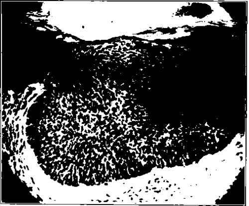Fig. 16.-A later development of nodule In basal-celled cancer of skin shows ulceration of epithelium. (Gilchrist's case).
Clinical Course
Clinically, these growths start upon a pre-existing dermatitis. Bloodgood states positively that in every case of which he has a complete history there was an antecedent lesion, however small. The commonest of these dermatoses is the so-called seborrheic wart, next eome small subepidermal nodules, then keratoses of various kinds, and finally scars or minute ulcerations, often thought to be traumatic. The first stage of the cancer that is noted by the patient is usually a slight itching or burning sensation, and at that time a very slight increase in thickness of the skin can be felt. Very shortly after a minute ulceration takes place and there is a serous discharge (Fig. 19). Then a scab forms, that drops off from time nhiny tuhhhch can he seen at the edge of the open sore, and this edge \h UHually hard and slightly elevated (Fig. 20). The neoplasm may then take any one of several courses, all shortly to be described. When one of these growths is sectioned and examined in the gross, careful inspection will reveal a number of very fine whitish lines radiating downward from the tumor proper; these are the alveoli, filled with cancer cells. These white lines are very much finer than those occurring in the prickle-celled carcinomata, and should serve to differentiate between the two kinds at the time of operation. All surgeons should become familiar with this class of tumors, for they do not metastasize, and hence it is not necessary to remove the adjoining lymphatic glands. When glandular involvement is spoken of as occurring in this group of tumors, it is probable that there is an error in diagnosis, and that the growth is really cuboidal-eellular origin.
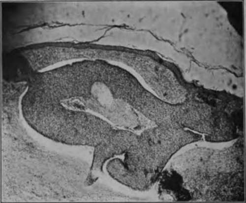Fig. 16.-This section was from a typical rolled-edge rodent ulcer of the shoulders. The basal cells are arranged in solid masses. Notice the way that normal epithelium and some connective tissue cover the mass of cancer cells, while In other portions the growth may be seen springing from the surface epithelium. This invasive growth, without change in the overlying skin, is common In cancer and frequently lends to incomplete operations. (Author's collection).
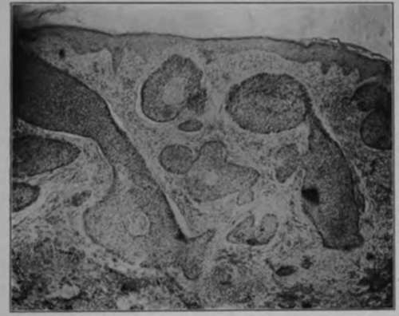Fig. 17.-This section also demonstrates the manner in which a basal-celled cancer may be covered by normal epithelium. This case had been treated by the x-ray and pronounced cured. Possibly too soft a tube was used.
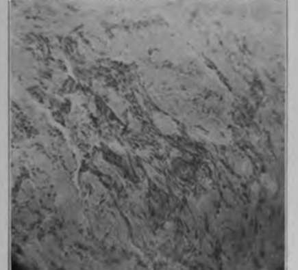Fig. 18.-In this low-power photomicrograph of a basal-celled carcinoma it can readily be seen that the cells are lying in small strands and also singly between connective tissue fibers. This histological picture is often seen in the large fungous basal-celled tumors, and at times makes them difficult to distinguish from spino-celled neoplasms. (Author's collection).
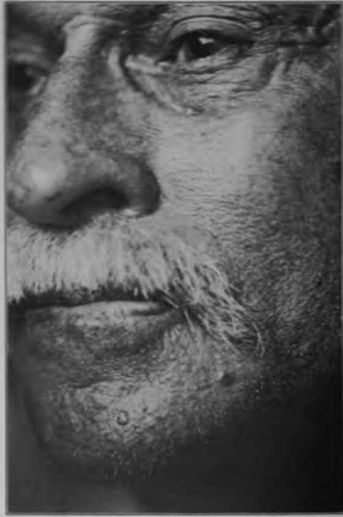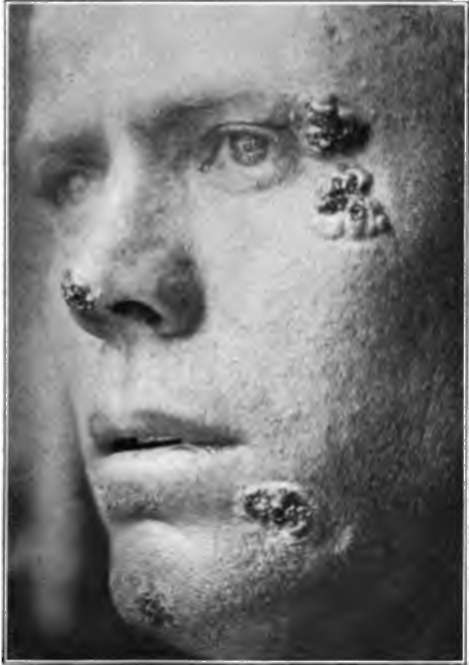Fig. 20.-This young farmer is suffering from multiple basal-celled cancers. The oldest is of seven years' duration. (Sutton's collection).
Continue to:
Tags
bookdome.com, books, online, free, old, antique, new, read, browse, download